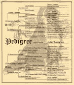
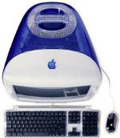
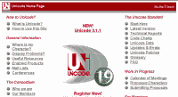

Еще раз о кодировках
24 сентября 2001 01:28:19
Статья
на АиФ-Интернет

"Прочитал Вашу статью "Откуда пошли русские
кодировки?". Хорошая статья, понятная и, что главное, информативная.
Но есть одно но: в ней ничего не рассказывается о других кодировках,
которые тоже имеют место быть в Интернете. Так, я неоднократно скачивал
текстовые файлы в казалось бы совершенно непонятной кодировке. Потом
(после того, как я установил замечательный текстовый редактор Aditor) стало ясно, что файлы были
закодированы какой-то MAC-кодировкой. Другие файлы (тоже текстовые),
как-то раз подвернувшиеся мне под руку, были представлены в кодировке ISO.
Очень хотелось бы подробнее узнать, каковы "родословные" этих кодировок.
Роман".
Действительно, в Сети помимо таких широко распространенных кодировок,
как KOI8 и CP1251(Win), вам могут встретиться некоторые гораздо более
редкие русские кодировки. Откуда они взялись и почему они столь редки?
Extended ASCII (она же ISO 8859-1, она же Latin-1) — это
расширенная таблица ASCII. В ней снова восстановлен в правах 8-й бит.
Благодаря этому в кодировке Latin-1 появилось место для всех
диакретических знаков основных европейских алфавитов. Поэтому, например,
для французского и испанского языков применяются не несколько кодировок, а
одна. Однако же русский алфавит очень сильно отличается от английского или
французского. Как, например, и греческий. Для таких языков пришлось
придумывать отдельные таблицы. Именно такая русская кодовая таблица
называется ISO 8859-5. Буквы ISO
(International Standards Organization — Международная организация по
стандартизации) говорят о том, что кодировка признана стандартной, однако
же признание это оказалось чисто номинальным — никто об этой кодировке
теперь почти и не вспоминает. Почему? Потому что с появлением MS DOS место
русских букв в кодовой таблице оказалось занятым — туда поместили
псевдографику. Те, кто пользовался DOS в этот период, возможно, помнят
мешанину непонятных значков вместо русских текстов. В результате борьбы с
таким явлением и получилась кодировка CP866(DOS), сочетавшая в себе
и русские буквы, и псевдографику.

Кодировка
Mac
(CP10007), как можно догадаться по ее названию, — кодировка для
компьютеров Macintosh. Расположением
строчных букв она похожа на CP1251(Win), однако же прописные — совершенно
на другом месте. Почему же ничего не слышно о проблемах с русскими
кодировками у пользователей Mac’ов? Скорее всего потому, что число таких
пользователей гораздо меньше, чем пользователей Windows и Unix-подобных
систем, и погоды они не делают, тем более что KOI8 и CP1251 настолько
утвердились в Рунете, что волей-неволей и Mac’овцам пришлось
приспособиться. Да и вообще, вы слышали когда-нибудь о том, чтобы
пользователи Mac’ов ввязывались в войны между unixоидами и поклонниками
Windows? Они, как всегда, спокойно продолжают делать свое дело.

Кодировка
Unicode представляет собой универсальную 2-байтовую (16-битовую)
кодировку. Почему универсальную? Потому что 2 байта, отведенные на каждый
символ, позволяют описать все распространенные мировые алфавиты в одной
кодовой таблице. Что это значит? Ну, скажем, пользуясь KOI8, Лев Толстой
не смог бы отсылать издателям отрывки из "Войны и мира" по e-mail — ведь в
KOI8 нет средств для отображения специфических символов французского
алфавита. А вот пользуясь Unicode —
смог бы. И не только на французском могла бы говорить Наташа Ростова, а
могла бы сражать кавалеров и китайским, и итальянским, и хинди…
Но пока
эта кодировка, несмотря на все ее прекрасные качества и прогнозируемое
блестящее будущее, не получила широкого распространения. Что ж, поживем —
увидим.
Ссылки по теме
"Откуда пошли
русские кодировки" — статья о проблемах русских кодировок в Сети
Unicode Home Page — официальный
сайт кодировки Unicode
Заметки об
извращениях — подробно о русских кодировках
Почтовый декодер Арт.
Лебедева — расшифровывает письма, пришедшие в неизвестных науке
кодировках
"Крестоносцы" —
статья "КомпьюТерры" о проблемах с кодировками